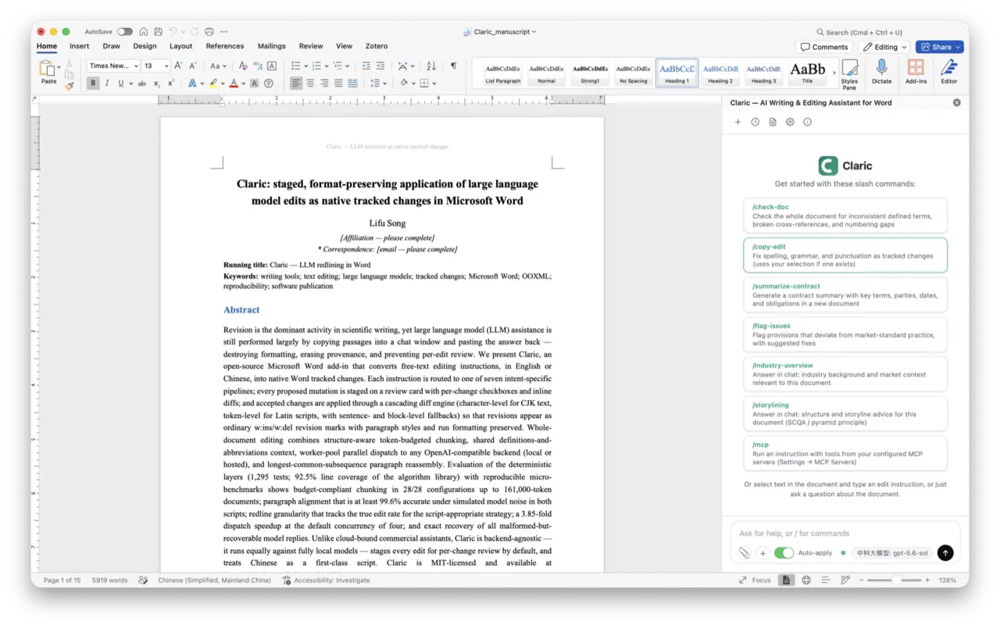
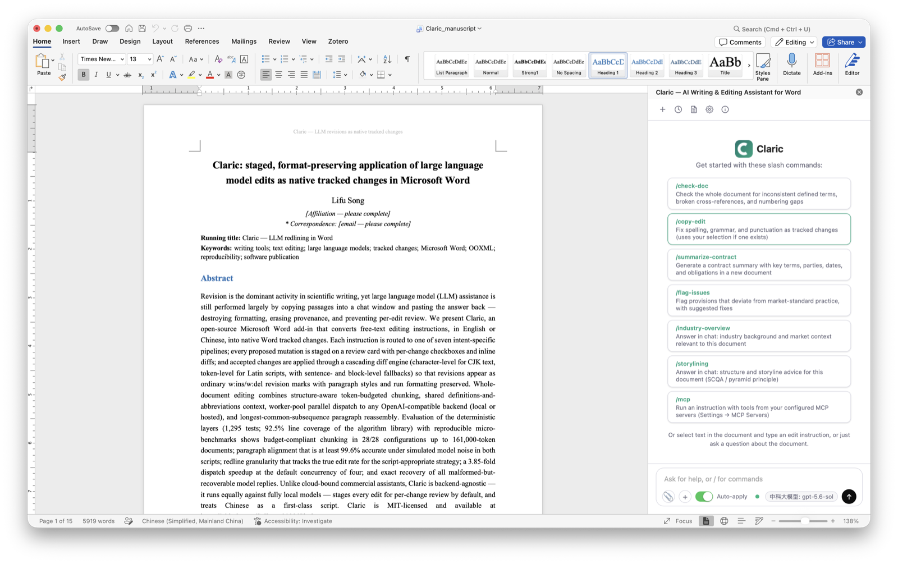
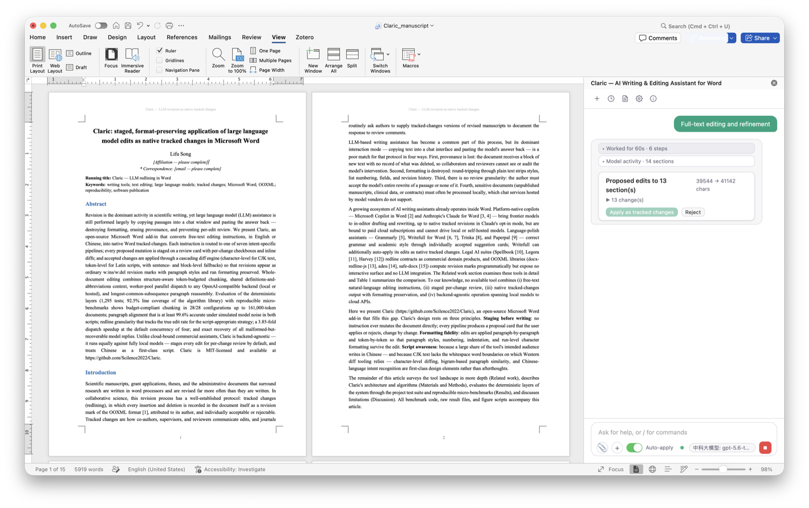
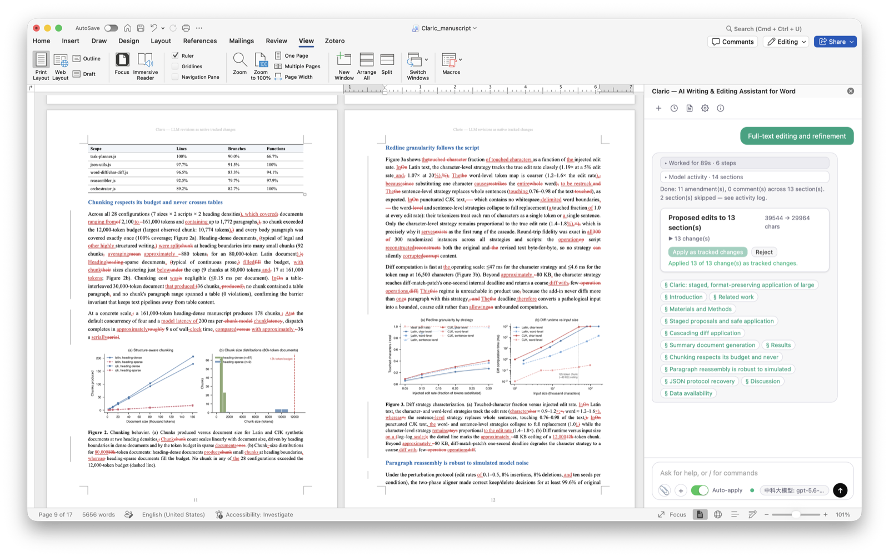
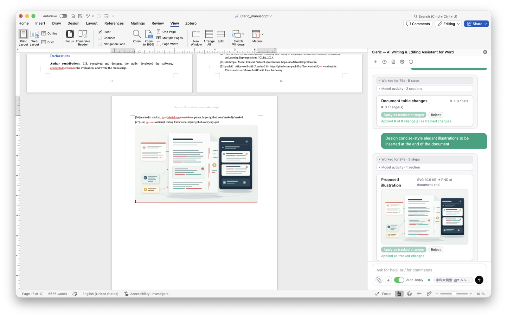
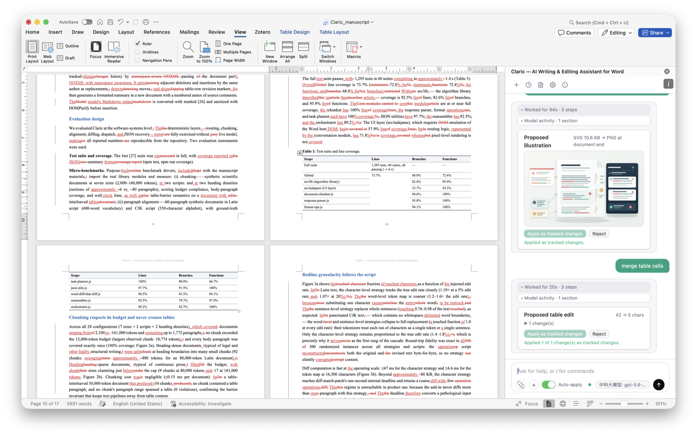
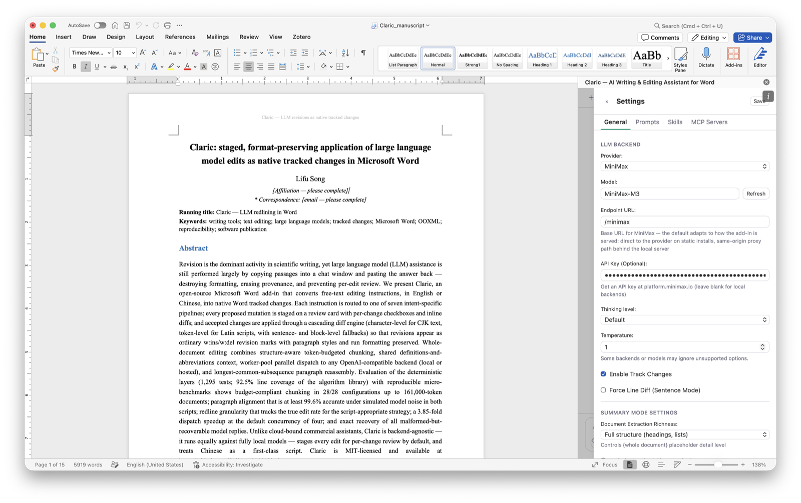

Claric is an AI writing & editing assistant that lives inside Microsoft Word. Ask in plain language — every suggestion arrives as a reviewable proposal card and lands as native tracked changes. Nothing is ever rewritten without your approval. Claric 是住在 Word 里的 AI 写作与编辑助手。用大白话下指令（中英文皆可），每条建议都是一张可逐条审阅的提案卡，以 Word 原生修订落地——不经你确认，绝不动一个字。
Try it: open any document, select a paragraph, and type
现在就试：打开任意文档，选中一段话，输入
polish this selection润色这段话

Ask → review → apply as native tracked changes — tables and illustrations included. 下指令 → 审阅 → 以原生修订落地——表格与插图也不在话下。
The way careful people actually work — a draft due tomorrow, a supervisor reading the redlines. Every fix stays traceable, because every fix is a real Word revision. 按严谨的人的方式工作：明天要交的稿子，导师（或合伙人）要看修订记录。每一处修改都可追溯，因为每一处修改都是真正的 Word 修订。
Select a passage or work on the whole document. Type what you want — in English or 中文 — and Claric routes it to the right pipeline: edit, format, table, illustration, or Q&A. 选中一段文字，或处理整篇文档。输入你想要的效果——中文英文都行——Claric 会自动路由到对应管线：编辑、排版、表格、插图或问答。
Each suggestion lands as a proposal card: before/after diff, one checkbox per change, and a button that jumps to the exact spot in your document. 每条建议都是一张提案卡：改前改后对比、逐条勾选、一键定位到原文位置。
Apply only what you ticked — Word records it as word-level tracked changes, exactly like a human editor's markup. Reject the rest with one click. 只应用你勾选的修改——Word 以逐词修订记录，和人工编辑的红笔批注一模一样。其余一键拒绝。
Real sessions, unedited — from the first slash command to the redlines your reviewer will see. 真实使用画面，未经修饰——从第一条斜杠命令，到审稿人将要看到的红线修订。






Academic writing is the lead scenario — contracts and everyday documents follow. One assistant, one review workflow. 学术写作是主打场景，合同与日常文档同样胜任。同一个助手，同一套审阅流程。
Clearer, more formal academic English — applied as word-level tracked changes your supervisor can accept or reject, exactly like a human editor's markup. 更清晰、更正式的学术表达，以逐词修订落地——导师可以逐条接受或拒绝，和红笔批注一模一样。
Claric reads the document section by section, leaves margin comments where it sees risk, and proposes fixes — each amendment a native redline opposing counsel can review. 分节通读全文，在风险处加批注并给出修改建议——每处修订都是原生红线，对方律师看到的和你看到的一样。
Formatting, figures, tables, and first drafts — all on request, all previewed before anything touches your document. 排版、配图、表格、初稿——一句话的事，全部先预览再落地。
Every document mutation is staged, reviewable, and reversible. Formatting survives the round trip. 每一次文档改动都先暂存、可审阅、可回退，格式在往返中完整保留。
Inline deleted/inserted diffs, per-change checkboxes, locate-in-document, and honest warnings when nothing changed. Staged ranges re-anchor at apply time, so cards never stomp each other. 内联增删对比、逐条勾选、原文定位，无改动时如实提示。应用时重新锚定范围，多张卡片互不踩踏。
A cascading diff engine — CJK character-level, formatting-preserving token map, sentence diff — writes real Word revisions, keeping bold, italic, fonts and colors intact. 级联差异引擎——CJK 字符级、保留格式的词元映射、句子级对比——写入真正的 Word 修订，粗体、斜体、字体颜色原样保留。
Parse → chunk along heading boundaries → parallel LLM dispatch with ETA → formatting-preserving reassembly. Definitions, abbreviations, and outline ride along as per-chunk context. 解析 → 按标题边界分块 → 并行调度（带进度与 ETA）→ 保留格式的重组。定义、缩写词、大纲作为上下文注入每个分块。
"Insert a 4×3 table" previews a grid before insertion; existing tables are editable through per-cell patch ops. Illustrations come from a real image model (OpenAI Images, CogView, MiniMax) when configured, with a sanitized SVG fallback. "插入 4×3 表格"先预览再插入；已有表格支持逐单元格修改。配置图像模型（OpenAI Images、CogView、MiniMax）后插图走文生图，否则回退到消毒后的 SVG。
Built-in /copy-edit, /check-doc, /summarize-contract and more. Import Claude-style SKILL.md packages, or save your own prompts as custom slash commands.
内置 /copy-edit、/check-doc、/summarize-contract 等技能；支持导入 SKILL.md 技能包，也可把常用提示词存为自定义斜杠命令。
Connect MCP tool servers and run ReAct tool loops with /mcp. Watch reasoning and output stream token-by-token in the model activity panel.
接入 MCP 工具服务器，用 /mcp 运行 ReAct 工具循环；在模型活动面板中逐 token 观看推理与输出。
"Add a title, then polish the whole text" is decomposed by an LLM task planner into ordered steps — one proposal card per pipeline, reviewed in sequence. "加个标题再润色全文"会被任务规划器拆成有序步骤——每条管线一张提案卡，依次审阅。
Flip the auto-apply toggle and settled proposals apply themselves as tracked changes — still staged, still auditable, no extra clicks. 打开自动应用开关，提案在生成后自动以修订落地——仍然留痕、可审计，省去逐次点击。
Claric doesn't lock you into one vendor. Connect the model you trust — keys stay in your browser, never on a server. Claric 不绑定任何厂商，接入你信任的模型——密钥只存在你的浏览器里，从不经过服务器。
Unpublished research and confidential contracts never leave your computer. 未发表的研究与机密合同，永远不出你的电脑。
Same-origin proxying built in — no CORS setup. You control what's sent and where. 内置同源代理，无需配置 CORS。发送什么、发到哪里，完全由你掌控。
One command installs Claric straight into Word — no admin rights, no Node.js, no Docker. Self-host with Docker or npm when you want local models. 一条命令即可把 Claric 装进 Word——无需管理员权限、无需 Node.js、无需 Docker；想接本地模型，再用 Docker 或 npm 自托管。
# downloads the manifest, registers it with Word, then opens Claric
curl -fsSL https://raw.githubusercontent.com/Scilence2022/Claric/main/installer/macos/Install-Claric.sh | bash
# same per-user install — works on consumer Microsoft 365 builds
irm https://raw.githubusercontent.com/Scilence2022/Claric/main/installer/windows/Install-Claric.ps1 | iex
Word opens Claric-Launch.docx with the taskpane mounted — reopen that document (or Home → Add-ins → Claric) anytime. Matching uninstall scripts live in installer/.
Word 会打开 Claric-Launch.docx 并挂载任务窗格——需要时重新打开该文档（或 主页 → 加载项 → Claric）即可，配对的卸载脚本在仓库 installer/ 目录。
# clone & configure git clone https://github.com/Scilence2022/Claric.git cd Claric && cp .env.docker.example .env # create HTTPS certs (mkcert recommended) mkcert -install && mkcert localhost cp localhost.pem server.pem cp localhost-key.pem server-key.pem # run — manifest served at https://<HOST>:<PORT>/manifest.xml docker compose up -d
# clone & install git clone https://github.com/Scilence2022/Claric.git cd Claric && npm install cp .env.example .env # create HTTPS certs, then start the dev server mkcert -install && mkcert localhost cp localhost.pem server.pem cp localhost-key.pem server-key.pem npm start
Self-hosting? Once the server is up, sideload its manifest with npm run install:macos or npm run install:windows from a checkout — or follow the manual steps in the README.
自托管的话，服务器跑起来后在仓库目录运行 npm run install:macos 或 npm run install:windows 旁加载其 manifest——或按 README 手动操作。